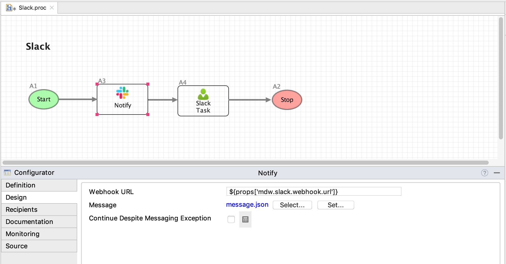

The Slack activity gives you the ability to send MDW notifications to a Slack channel through an incoming webhook.
Slack integration depends on the com.centurylink.mdw.slack asset package. To get started with Slack
notifications, discover and import this package as described in the
MDW Studio User Guide
Create an incoming webhook as described in the Slack Documentation. then select Connectors. In the connectors list find Incoming Webhook and click Configure. Capture its URL and add this in mdw.yaml as 'slack.webhook.url'. Note: it's highly recommended to encrypt this value as described in the MDW Configuration Guide.
In MDW Studio, after dragging a Slack activity from the Toolbox onto your process canvas, select it and click on the Configurator Design tab. Here you'll specify the notification template asset, which is a JSON asset with your message content.

Message content is formatted according to
Slack's Documentation.
Here's the
sample notification included in the com.centurylink.mdw.slack asset package:
{
"text": "*A message from MDW*\\nSomething important has happened!\\n<${props['mdw.hub.url']}|Open in MDWHub>"
}
Notice that this template contains the expression ${props['mdw.hub.url']}. Values from the activity's
ActivityRuntimeContext
are available to reference in your template's expressions.
The MDW notifications automated tests contain a functional workflow process with both a Slack notification activity and a manual task configured with the Slack task notifier (see Slack.proc).